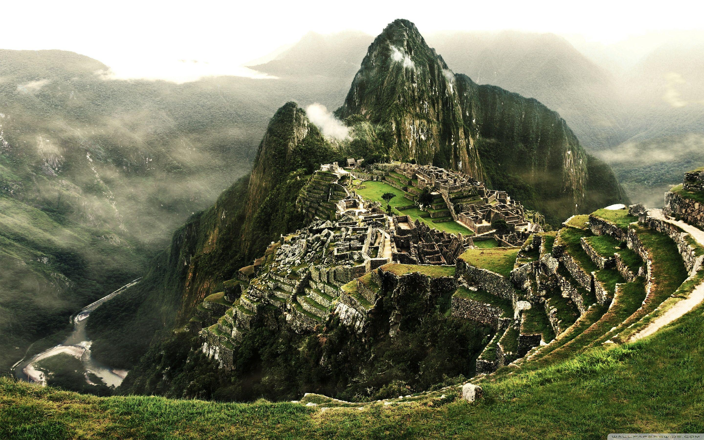
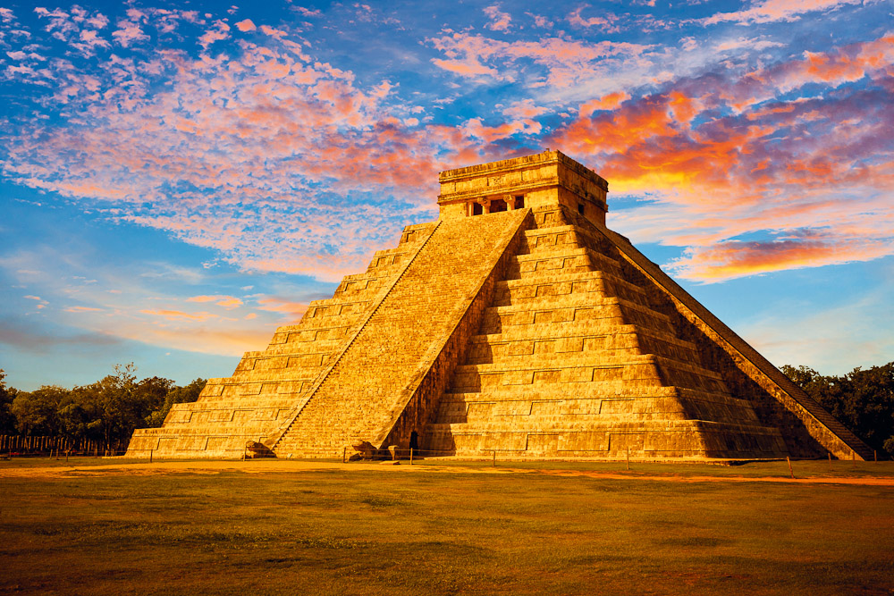
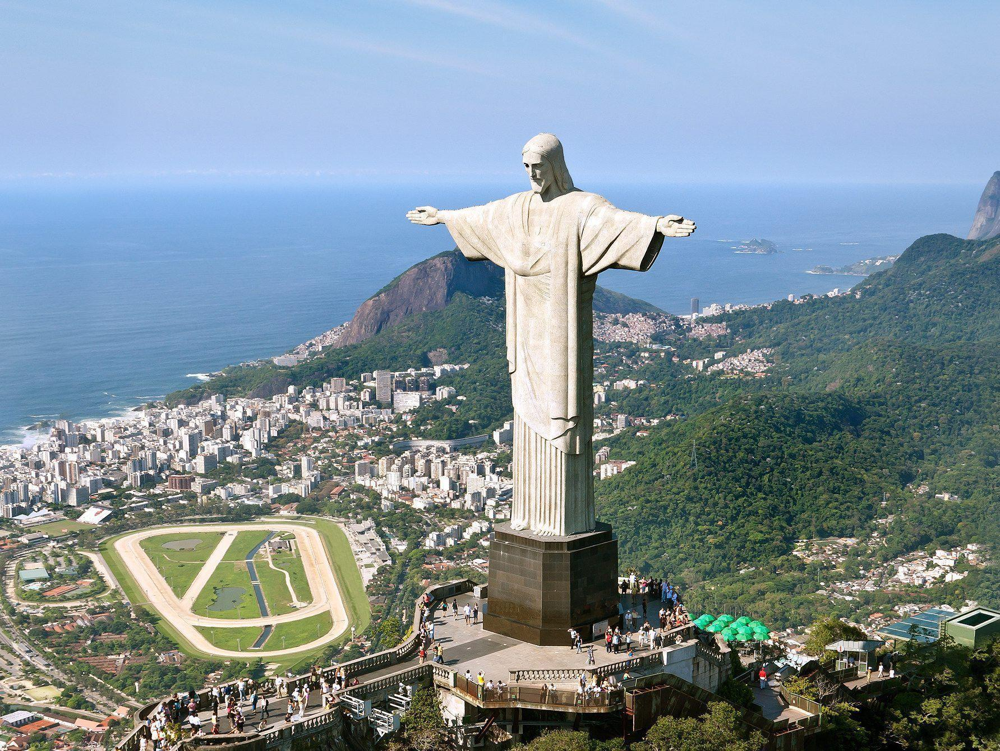
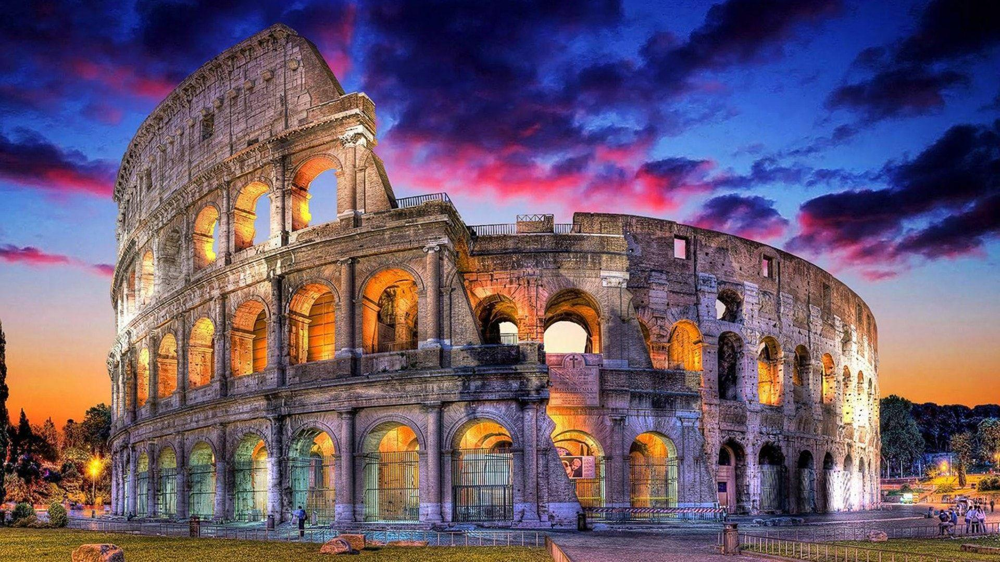
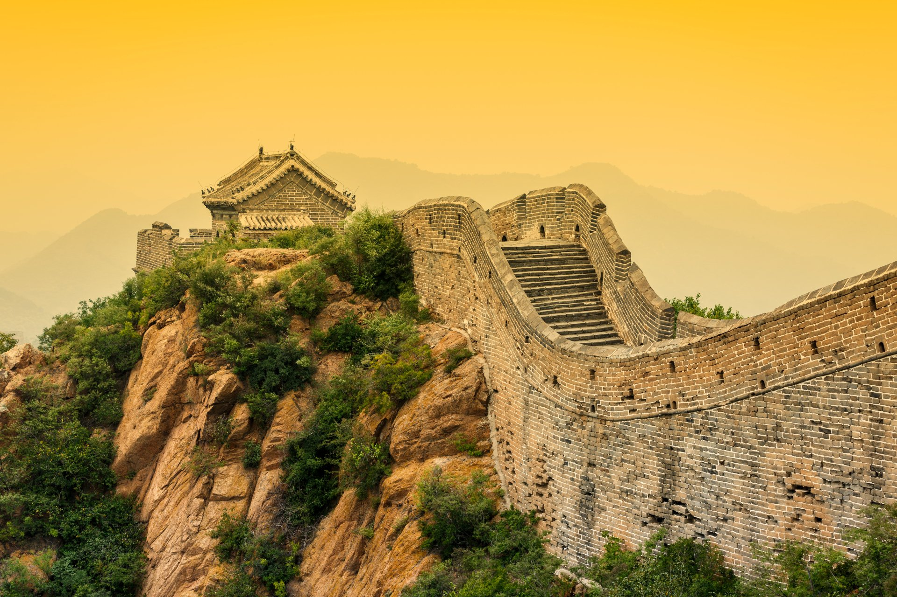
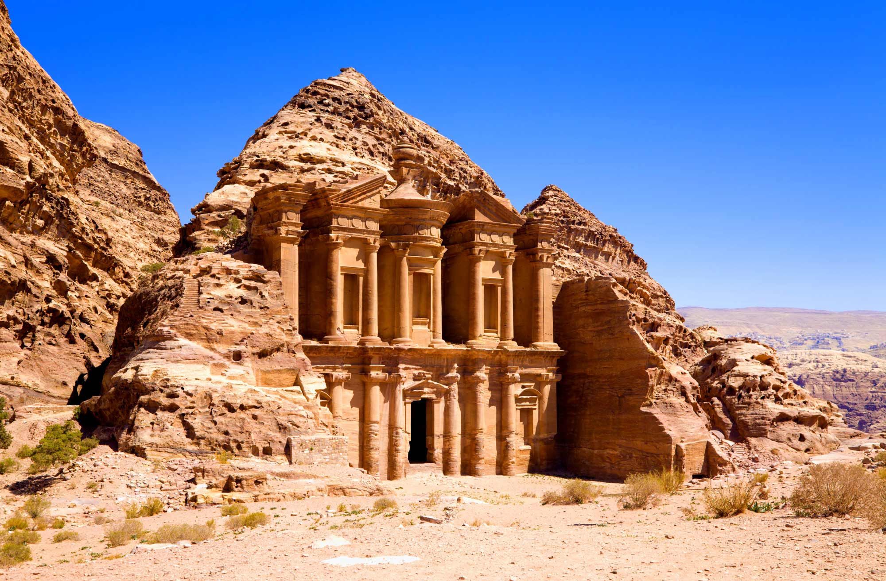
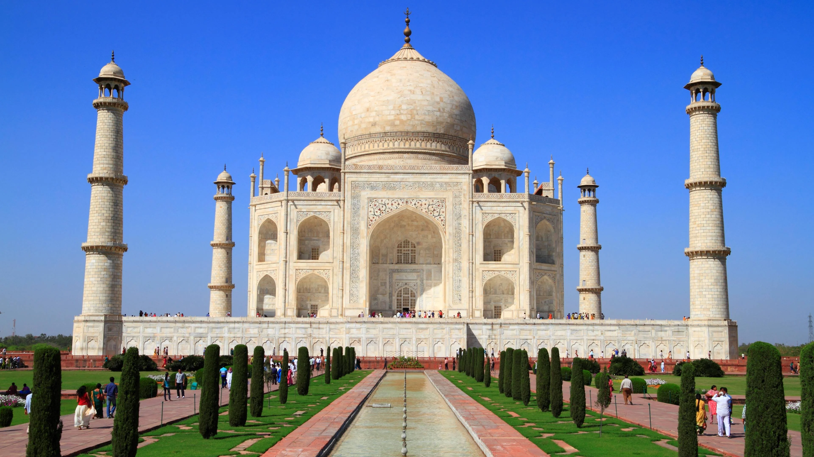

🏔️ Machu Picchu – Peru
- 15th-century Incan citadel located high in the Andes Mountains.
- Rediscovered in 1911 by Hiram Bingham.
- Made of dry-stone construction with precise cuts fitting without mortar.
- Likely served as a royal estate or religious site.
- Offers stunning views and a deep connection to Incan culture and nature.
🌄 Chichen Itza – Mexico
- Ancient Mayan city located on the Yucatán Peninsula.
- Known for the step pyramid El Castillo, dedicated to the god Kukulcán.
- Features advanced knowledge of astronomy and architecture.
- Was a major economic, political, and religious center around 600–1200 AD.
- Acoustics of the site allow for unique sound effects, like the echo of a clapping hand resembling a bird's call.


✝️ Christ the Redeemer – Brazil
- Massive 30-meter-tall statue of Jesus Christ in Rio de Janeiro.
- Located atop Mount Corcovado, offering panoramic views of the city.
- Completed in 1931 and made of reinforced concrete and soapstone.
- Symbolizes peace and openness of the Brazilian people.
- Frequently struck by lightning but protected and maintained regularly.
🏟️ Colosseum – Italy
- Ancient amphitheater in the center of Rome, completed in 80 AD.
- Could hold up to 50,000–80,000 spectators during gladiator games.
- Built using concrete and stone, showcasing Roman engineering skills.
- Used for public spectacles, battles, and drama performances.
- Partially ruined but remains a symbol of Imperial Rome and endurance.


🏯 Great Wall of China – China
- Stretches over 21,000 km, built to protect China from invasions.
- Construction started in the 7th century BC, continued for centuries.
- Made from earth, wood, bricks, and stone, depending on the region.
- Contains watchtowers, barracks, and fortresses along its length.
- Symbol of China’s strength, unity, and historical heritage.
🏛️ Petra – Jordan
- Ancient Nabataean city carved into rose-red sandstone cliffs.
- Known for the Treasury (Al-Khazneh) and hundreds of rock-cut structures.
- Was a major trading hub between Arabia, Egypt, and the Mediterranean.
- Accessible through a narrow gorge called the Siq.
- Dates back to 300 BC, and showcases advanced water and building systems.


🕌 Taj Mahal – India
- Built in 1632 by Mughal emperor Shah Jahan in memory of his wife Mumtaz Mahal.
- Located in Agra, it’s made of white marble and precious stones.
- Represents Mughal architecture with Persian, Islamic, and Indian influences.
- Known for its symmetrical design, gardens, and reflection pools.
- Symbol of eternal love and one of the most photographed monuments in the world.